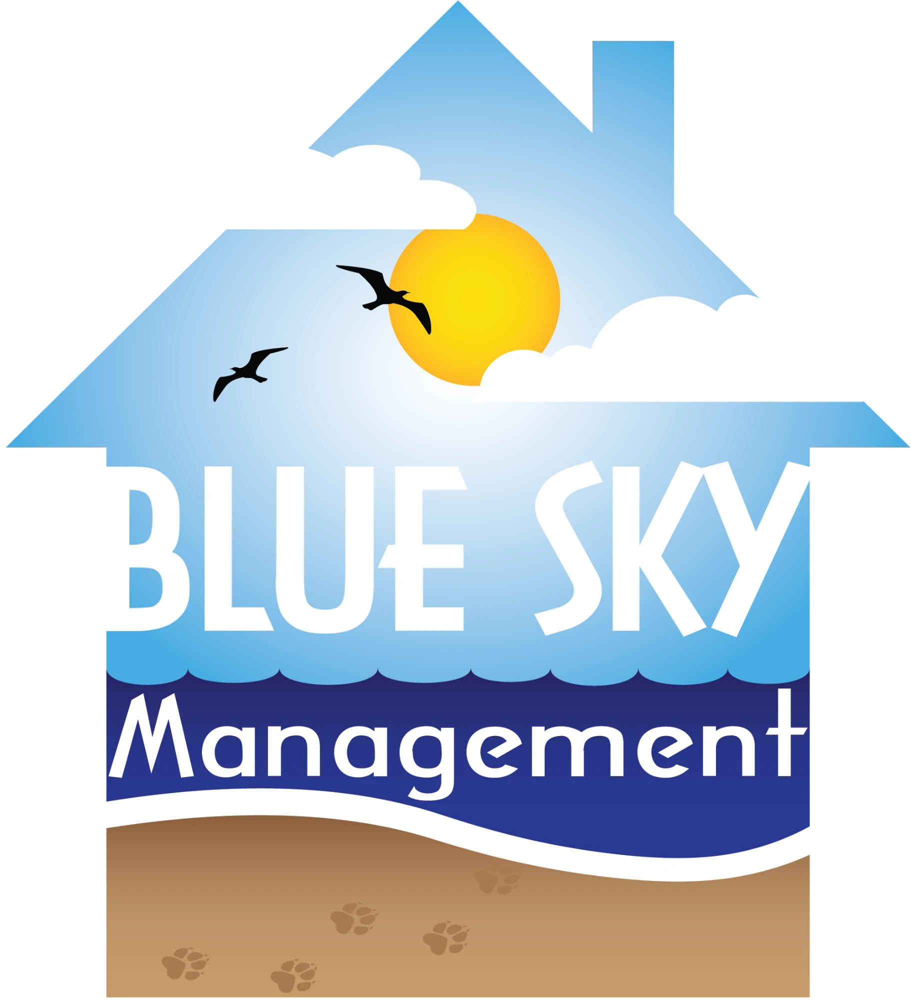

Sussex County, Delaware
We've retired.
We're no longer providing community management services. Thank you to the owners, residents, and partners we had the pleasure of working with.

We're no longer providing community management services. Thank you to the owners, residents, and partners we had the pleasure of working with.